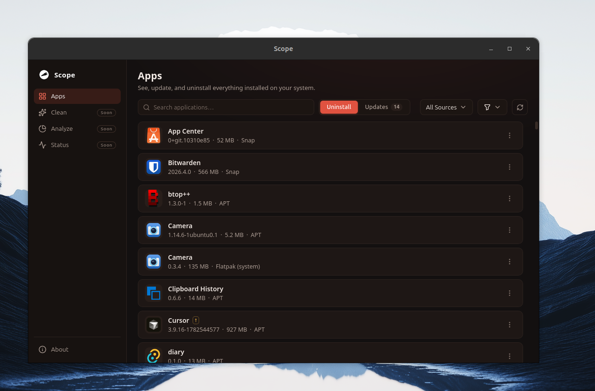
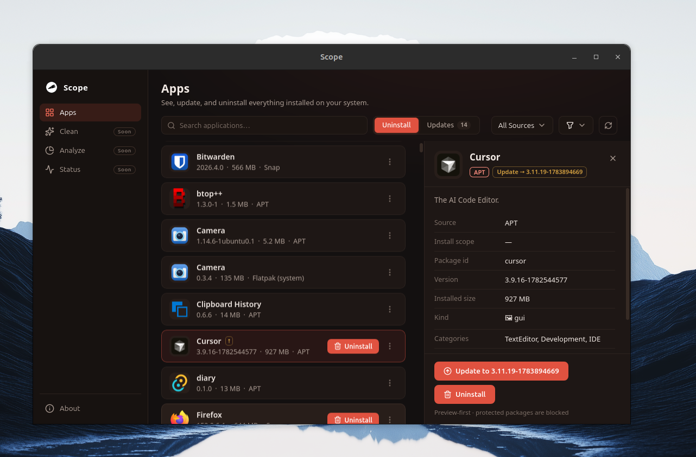

Every app on your Linux system. One window.
Scope scans APT, Snap, Flatpak, and AppImage into a single searchable list — then updates or uninstalls anything in it, with a preview before anything changes.
.deb · AppImage · .rpm — x86_64 · MIT License

The list. APT, Snap, Flatpak, and AppImage side by side — with real icons, installed size, and update status for every app. Search and source filters cut through hundreds of packages in place.
Four package managers, one surface
Scope talks to each source through its own tools — never by editing package databases directly. What it finds, what it can do, and when it asks for permission:
apt-mark + dpkg-query — no auto-installed dependency noise
UpdateUninstall
Polkit
snap list, with runtime and base snaps (core*, snapd, gnome-*) hidden
RefreshRemove
Polkit
flatpak list --app — user and system install scopes tracked separately
UpdateUninstall
System only
~/Applications and ~/.local/bin
Trash
None

The detail. Version, source, install scope, size, and categories for any package — plus one-click update or uninstall. Every action shows its exact plan before it runs, and protected packages are blocked outright.
Careful by default
Uninstalling the wrong thing on Linux can break a system. Scope is built so that can't happen quietly.
Preview before anything runs
Every update and uninstall shows the exact plan — target, version change, and the command behind it — and waits for your confirmation.
Protected packages stay put
A backend deny-list blocks removal of system-critical packages like ubuntu-desktop, systemd, and linux-image-* — no exceptions from the UI.
Your password stays yours
Privilege escalation goes through Polkit (pkexec) — the standard system password dialog. Scope never sees, stores, or handles credentials.
Never blocks the window
Operations run as background tasks with live logs. Confirm, keep browsing your apps, and the list refreshes itself when the task finishes.
Get Scope for your distro
Pre-built for x86_64 Linux. Grab a package from GitHub Releases and install it with your usual tools.
.deb
RecommendedUbuntu, Debian, and derivatives. Download, then:
.AppImage
Any distro — no install, just mark it executable and run:
.rpm
Fedora, RHEL, and derivatives. Download, then:
Prefer to build it yourself? Clone the repo and run npm install && npm run tauri dev.
Frequently asked questions
Scope is a free, open-source desktop app for Linux that scans APT, Snap, Flatpak, and AppImage into one searchable list — so you can see, update, and uninstall every app on your system from a single window.
Scope supports APT/dpkg (manually installed packages), Snap (with runtime and base snaps hidden), Flatpak (both user and system install scopes), and AppImage files in ~/Applications and ~/.local/bin.
Every update and uninstall shows a preview plan before anything runs. A backend deny-list blocks removal of system-critical packages, and privileged operations go through Polkit (pkexec), so Scope never handles your password.
Download the .deb, AppImage, or .rpm for x86_64 from GitHub Releases. On Ubuntu or Debian, install with sudo apt install ./Scope_0.1.8_amd64.deb.
Releases ship an .rpm for Fedora and RHEL-family distros, and the AppImage runs on most x86_64 distributions. Ubuntu and Debian (.deb) are the primary target today.
Yes. Scope is free and open source software released under the MIT License. The full source code is available on GitHub.